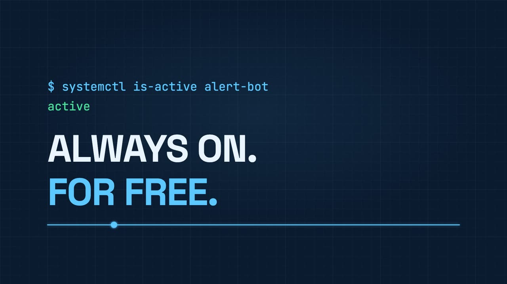
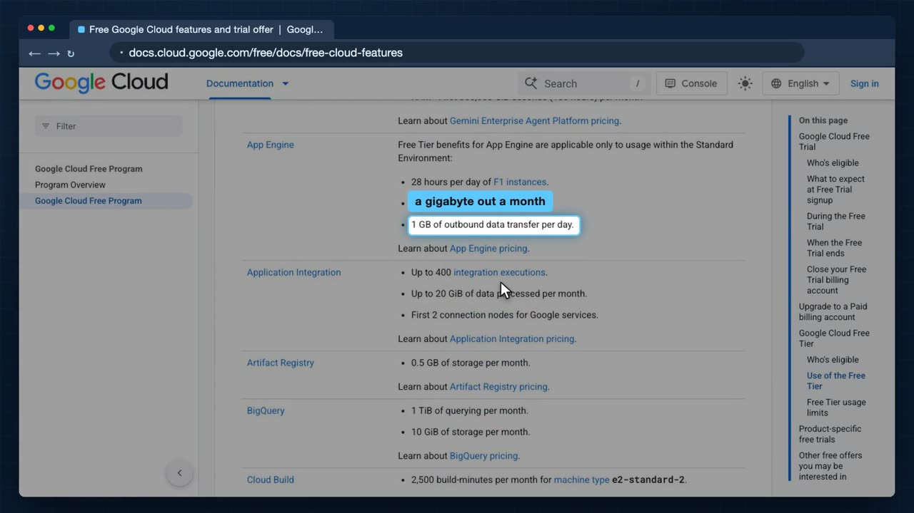
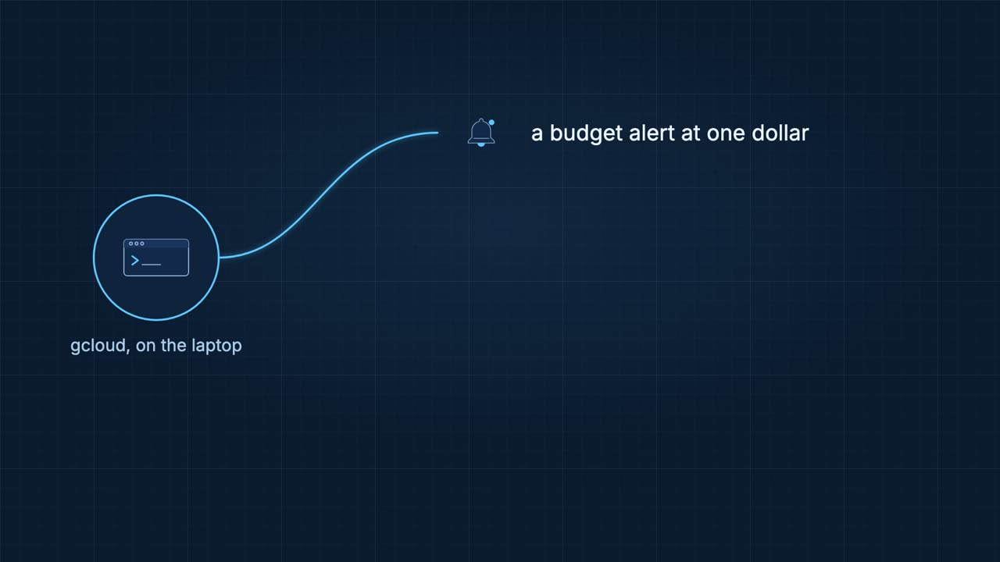
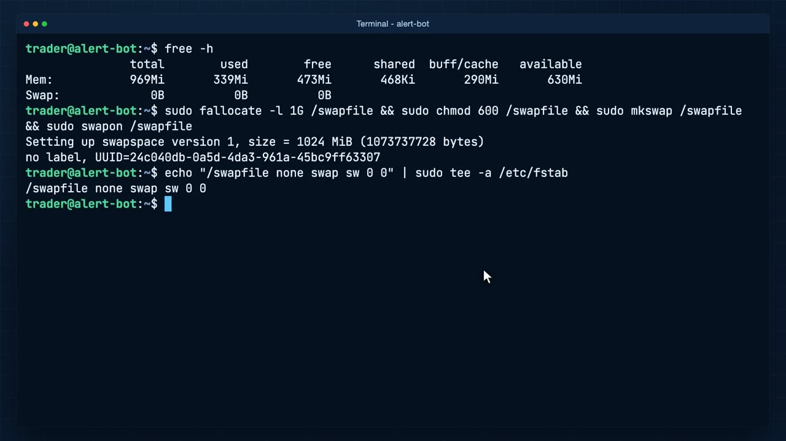
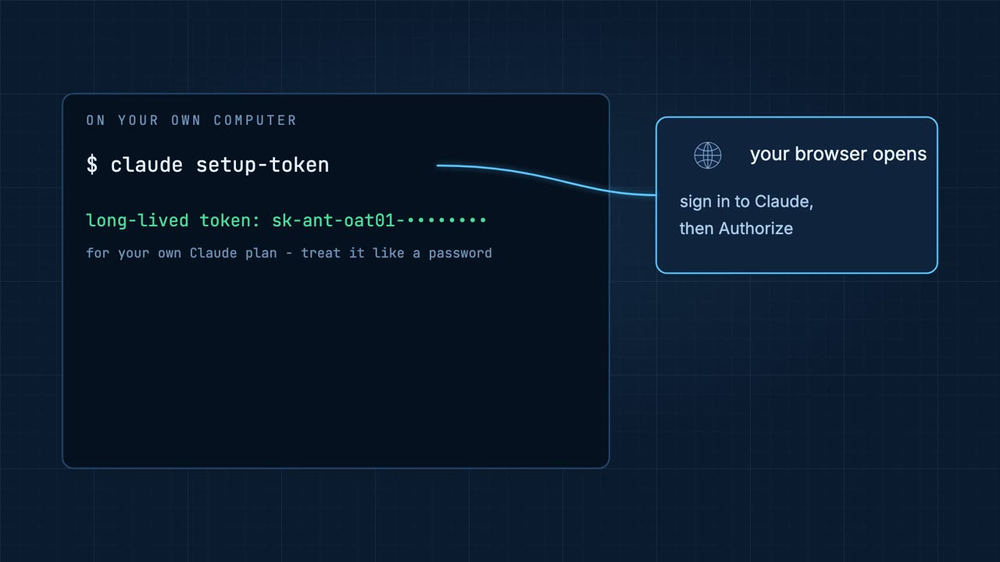
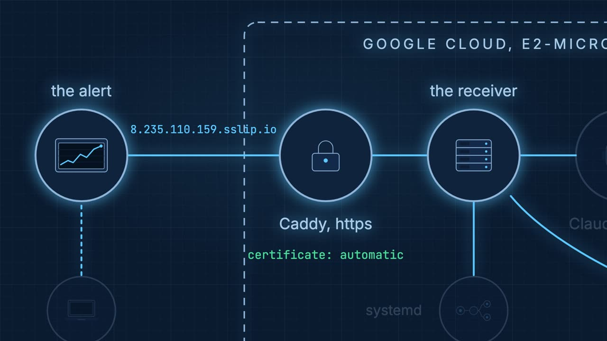
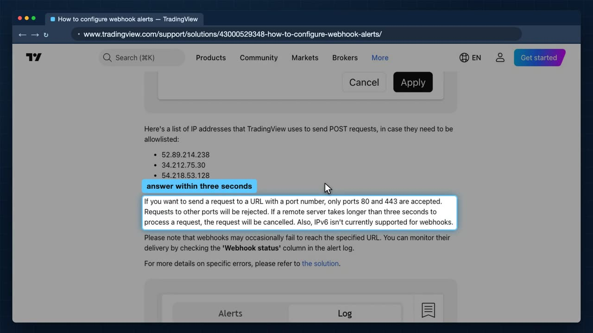
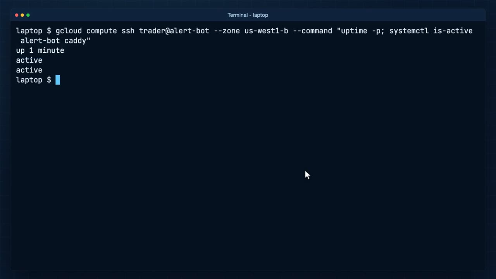
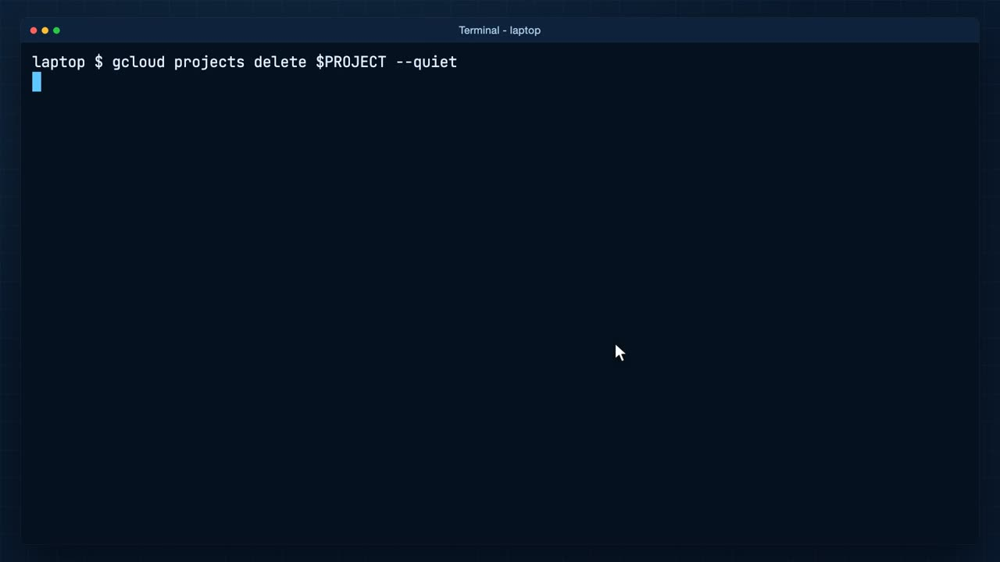

Lessons / AI trading, step by step
My AI trading bot runs 24/7 on a free Google Cloud server (TradingView, Claude, Alpaca)
The TradingView alert bot from the last video, moved onto Google Cloud's always-free e2-micro: a permanent HTTPS address, keys in Secret Manager, systemd, a real alert firing after a reboot.
Prices and numbers are as of the video's publication, October 1, 2026.
The code for this lesson: github.com/nexusfissioncode/algo-trading/tree/main/always-on-cloud
Why a server Watch from 0:00

In the last video, a TradingView alert woke Claude on my laptop, and Claude placed a paper trade or explained why it skipped. It worked, but only while the laptop was awake.
Today we move that exact bot onto a free Google Cloud machine that never sleeps. A permanent web address, the keys locked away, a service that restarts itself, and a log you can read in the morning. Every command, from an empty project to a real order.
Two things break the laptop version. When the lid closes, the laptop sleeps, and an alert that arrives at three in the morning knocks on a door nobody opens. And the free tunnel hands out a new random address every time it restarts, so the alert in TradingView keeps pointing at an address that no longer exists.
So we give the bot a home of its own. A small machine in Google Cloud, with an address that never changes. The alert goes to that address, Caddy answers it securely, and hands it to the same receiver as before.
The receiver wakes Claude, and Claude trades the paper account through the Alpaca M C P server, exactly as it did on the laptop. The code does not change at all. What changes is everything around it.
Free, if you read the fine print Watch from 1:14

First, the word free. Google Cloud has an always free tier, and it is worth reading the page itself, because free here comes with fine print. I open it from a new tab, and scroll down to Compute Engine, which is Google's name for virtual machines.
You get one small machine, the E two micro. It is not preemptible, which means Google will not switch it off to make room for someone else.
But only in one of three regions in the United States: Oregon, Iowa or South Carolina. Pick anywhere else and it is billed. I will use Oregon.
30 gigabytes of standard disk. Standard, not the faster balanced or solid state disk, which the setup screens suggest by default.
And one gigabyte a month of data going out. An alert and an answer are a few hundred bytes, so the bot will never come close.
Read this line twice. The limit is counted in hours, not machines: one machine running all month uses up the whole allowance. Run two at once, and one of them is paid for.
Anything not on this page, a bigger machine, a graphics card, a faster disk, is billed. So the next thing we set up is an alarm that tells us if anything ever costs money.
The machine Watch from 2:17

Everything from here is done from the laptop's terminal with G cloud, Google's command line tool, so you can copy every command from the description. You install it from Google's install page and run G cloud init once, which signs you in and picks the project. I made a project just for this bot, so deleting it later removes everything in one go. First, a budget alert, so a mistake is an email and not a bill.
Then a static address, one that never changes, which is what TradingView will send to. It is free while it is attached to a running machine. And then the machine itself.
Last, a firewall rule that lets in web traffic and nothing else.
I keep the project's name in a variable, so the commands after it read the same for you as for me.
That is the project, just for the bot. Next I switch on the three Google services we need: Compute Engine for the machine, Secret Manager for the keys, and budgets for the alarm. A new project has them all switched off, and each takes a few seconds to switch on. Then I look up which billing account pays for this project, into a variable, without printing it on the screen.
The budget: $1, for this project only, with an email at half of it and at all of it. If the machine ever starts costing money, I hear about it the same day, long before it adds up.
Now the static address. Google reserves it, and I ask for it back in plain form. This is the address the whole world will use to reach the bot, and it stays the same through every restart. Then the machine itself, and every part of this command is the fine print from the free tier page. Oregon. The E two micro. Debian 12, a plain and well supported Linux. A 30 gigabyte standard disk. The static address we just made. A tag, so the firewall rule can find it. And access to Google's services, so it can read the keys from Secret Manager later.
Google builds it while I wait. It warns that a small standard disk is slow, and for a bot that answers a few alerts a day, that does not matter.
There is the machine type, E two micro.
Running, about 20 seconds after I pressed enter, with our static address as its external address. The other address, the internal one, is only for Google's own network, and we never need it.
And the firewall rule: for machines with the tag, let in ports 80 and 443, plain web and secure web. Nothing else can reach this machine from the internet.
Inside the machine Watch from 4:33

To get inside the machine, G cloud compute S S H. I log in as a user called trader, a user just for the bot, rather than as myself. The first time, G cloud makes a key for you and hands it to the machine, so there is no password to set.
And we are in.
The prompt now says trader at alert bot: every command from here runs on the server in Oregon, not on my laptop.
This is the catch with a free machine: just under one gigabyte of memory, and no swap at all. Installing Claude Code and running it next to the Alpaca server can run out of memory, and when that happens Linux simply kills something.
So I give it a spare gigabyte on the disk, a swap file, and add it to the file system table so it comes back after a reboot. Now the installs. Caddy from Debian, for the secure address. Then U V, which runs the Alpaca M C P server. Then Claude Code, with its official installer. I've sped up the waiting.
The installers put their programs in a folder in trader's home, so I add that folder to the path, so the shell can find them, and then I check every version.
Python came with Debian, and the receiver needs nothing else: it only uses Python's standard library.
U V, which starts the Alpaca M C P server whenever Claude needs it.
Claude Code, the same program you run on your laptop, now on the server.
Caddy, the web server that will answer at our secure address.
And G cloud, which comes with Google's Debian image. The bot will use it to fetch its keys. That is everything. I log out, back to the laptop.
Secrets and systemd Watch from 6:00

The server has no browser, so Claude cannot sign in the usual way there. Instead you make a sign in for it on your own computer, where Claude is already set up. In a terminal, run Claude setup token.
It opens your browser at Claude's sign in page. Sign in with your Claude account if you are not already, and press authorize.
Back in the terminal, it prints a long lived token that starts with S K dash ant. It uses your own Claude plan, the same as Claude on your laptop, so treat it like a password: never paste it into a file or a chat, and never into the code.
Keep it in a variable instead. Read dash S reads what you paste without showing it and without saving it in the shell's history. Then export it, and it sits in this terminal's memory, next to the Alpaca keys. From there, it goes into Secret Manager with the others, as you are about to see.
The bot needs four secrets: the two Alpaca keys, the Claude sign in, and the alert secret that proves an alert is yours. They must never sit in the code, in a file on the server, or in the shell's history. On my laptop they live in environment variables, and I never type them.
They go into Google Secret Manager, a locked box that belongs to the project, and small enough to be free. When the bot starts, a tiny script asks Secret Manager for them, and they live only in the bot's memory.
And only this machine is allowed to read them, and only to read them. The Claude sign in comes from Claude setup token, which you run once on your own computer. It signs you in through the browser and gives you a long lived token for your Claude subscription, so the server needs no browser at all. If you would rather pay per call, an Anthropic A P I key works the same way.
First the project's name, into a variable, as before. Then the first secret: print the variable, with no new line after it, and pipe it straight into G cloud secrets create. The key goes from memory to Secret Manager without ever being on the screen.
Created, version one. The same for the secret key, then the Claude token. The alert secret is one I choose myself, orange kite, because I will type it into TradingView later. Pick a long one of your own; this one is deleted with the project at the end.
Four secrets, one place. Only the names are listed. Nobody sees the values, not even here, and every time one is read, Google writes it down in the project's audit log. If a key ever leaks, you replace it in one place, and the server picks up the new one on its next start.
Last, I look up the machine's own identity, its service account, and give it one role, secret accessor. It can read these secrets, and do nothing else with them.
Back on the laptop, in the bot's folder.
The receiver, the rules and the M C P settings are exactly the files from the last video. Not a line changed. Next to them, three new ones for the server.
The first is start dot S H. For each secret, it asks Secret Manager for the latest version and puts it in an environment variable, in memory only.
Then it hands over to the receiver, the same way I started it by hand last time. I make a folder on the server, and copy all six files across with G cloud compute S C P.
Here is that service file whole, because the last lines matter most. The unit section says what it is, and to wait until the network is up before starting.
The service section: run as the user trader, never as root, in the bot's folder, with a path that includes where the installers put Claude and U V. And what to start: the little script that fetches the secrets and then runs the receiver.
Restart always, with a five second pause. If the bot ever crashes, system D starts it again.
And the install section. Wanted by the multi user target means: start it whenever the machine boots into its normal running state, before anyone logs in. This is the line that brings the bot back after a reboot.
To use it, copy it into system D's folder, and enable it with dash dash now, which starts it at once and at every boot from then on.
Six files on the server. Now the part that makes it always on. I read the static address back into the terminal, log in again, and open the second new file, a unit for system D. System D is the program that starts everything on a Linux machine, and a unit tells it how to run one more thing.
It runs as trader, not as root, so the bot cannot touch the rest of the machine.
It starts the script, in the bot's folder.
If the bot ever crashes, system D waits five seconds and starts it again.
And it is wanted by the normal running state of the machine, which means it starts at every boot, before anyone logs in. I copy the unit into place, and enable it now and for every boot, in one command. The script fetches the four secrets, and the receiver starts.
Its log says listening. Same line as on the laptop, but now on a server that never sleeps, started by system D rather than by me.
A permanent address Watch from 10:33

TradingView only sends to a secure web address, and a secure address needs a certificate, and a certificate needs a name, not just numbers. You could buy a domain. You do not have to. A free service called S slip dot I O turns any address into a name: put the numbers in front of S slip dot I O, and the name leads straight back to those numbers.
Caddy is a web server that fetches a free certificate for a name all by itself, from Let's Encrypt, and renews it before it runs out. No account, no settings.
Caddy answers on the secure port, and passes each alert to the receiver, which still only listens on the machine itself.
Caddy is two steps. First, install it. It is a Debian package, so one apt get install does it, and it starts running as a service straight away, answering on the plain web port with a welcome page.
Second, tell it what to serve. Its settings live in the Caddy file, and ours has just two lines: the name of our address, and reverse proxy to local host port 8765, which means hand everything that arrives to the receiver.
Reload Caddy, and when it sees a name in that file, it gets a certificate for it from Let's Encrypt on its own, and renews it before it expires. No account, and nothing else to set up. You saw the install earlier, and here is the Caddy file going in.
The third new file is the Caddy file: one name, and where to send what arrives. I fill in our address as an S slip name, put it in Caddy's place, reload Caddy, and log out. Back on the laptop, from outside, I knock on the new address with an empty alert. The first time, Caddy has to fetch its certificate, which takes a little while.
401: not allowed. That is exactly right. The secure address works, the certificate is real, the alert reached the receiver, and the receiver turned it away because it carried no secret.
Point TradingView at it Watch from 12:17

Before pointing TradingView at it, here is TradingView's own page on webhooks, because our setup meets each of its rules, one by one.
Only ports 80 and 443. That is why the firewall lets in those two, and why Caddy answers on the secure one.
TradingView gives up if the answer takes longer than three seconds. Claude takes longer than that, which is why the receiver answers at once and lets Claude work afterwards.
Every alert comes from one of these four addresses. If you want to go further, you could let only these through the firewall.
And the alert's message is sent as the body. Written as J SON, it arrives as J SON, which is what the receiver reads.
Proof Watch from 12:54

Now the proof. Something bad happens to every server sooner or later: Google restarts it for maintenance, or it crashes. So I restart it myself, the rudest way, with a reboot, and touch nothing afterwards.
The connection drops as the machine goes down. I give it a minute to come back up on its own. I've sped up the waiting.
Then I ask it two things without logging in. How long has it been up? A minute or two, so it really did restart.
And are the bot and Caddy running? Both active, and nobody started them. System D did, at boot, and the bot fetched its secrets again on its own. I read the static address into the terminal for later, and in a second window I log in and follow the bot's log live, with journal control.
The log shows the receiver listening, started by the reboot. Now a real alert, in TradingView.
This is my own TradingView, signed in, on the bitcoin chart. The alert button opens a new alert.
The condition: the price crossing this line, which TradingView sets at the price right now. For a demo that is handy, because it fires as soon as the price moves across it. For real, this is where your own condition goes: an indicator, a strategy, a level.
In the message, I name the alert, and replace the text with the four fields the receiver expects. The secret, orange kite. TradingView's placeholder for the ticker. Buy. And the placeholder for the price.
In notifications, I tick webhook U R L, and paste our permanent address, slash alert. Unlike the tunnel's address, this one never changes, so you set it once. Webhooks need one of TradingView's paid plans. Then create.
The alert is waiting for the price to cross the line. I've sped up the wait.
It fired. TradingView sent the message across the internet to our address, Caddy passed it to the receiver, and there it is, on the server in Oregon. Claude is starting, with the same short list of tools and the same page of rules as before.
Claude checked the price and the positions, found nothing held, and placed a market order for $1,000 of bitcoin.
Its decision, in one line: bought, because the price was close to the alert's and nothing was held yet. Now let us check with the broker.
At the broker, the Alpaca dashboard for the paper account shows the order, placed by a server I was not even logged in to, because of an alert I set in TradingView a few seconds earlier.
And this is what you read in the morning. Every alert and every decision is kept in the decisions log, one line each, with the time. Whatever happened overnight, it is all here.
Turning it off Watch from 15:17

Last, how to turn it all off, so nothing keeps running that you forgot about. To pause the bot, stop the machine.
Terminated, in Google's words, which just means stopped. A stopped machine costs nothing, though a static address that is not attached to a running machine is billed by the hour, so do not leave it like this for long.
To remove everything, delete the project. The machine, its disk, the address, the firewall rule and the secrets all go with it, and nothing is left that can bill you.
So that is the bot, living on its own. A permanent address, keys that never touch a file, a service that comes back by itself, and a log for the morning.
What it costs: the machine, the address, the disk and the secrets sit inside the free tier, and the budget alert tells you the day that changes. Claude runs on your own Claude plan, so every alert that gets past the secret uses a little of it.
Keep it on paper, and read the decisions log for a few weeks before you trust it. In the next video, we give Claude a tool of our own: your own indicator, as an M C P server Claude can call.